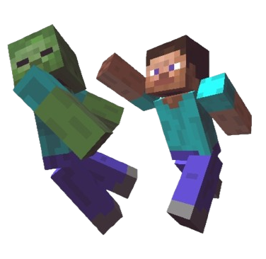

You're pretty safe during the day in Minecraft, so long as you're not taking naps underwater or trying to drink the lava. But monsters will come out at night. So let's learn to fight! Being good at combat is more about personal skill than the weapon in your hands. A pickaxe, shovel, and even your bare fists can be deadly with good timing. When enemies like the zombie or spider come towards you, make sure you're timing your attacks to when they're within range of you. Get the timing right, and you'll be taking down monsters in no time! Later you’ll discover swords, bows and arrows, and even potions that make you tougher. You're ready to survive and thrive in the world of Minecraft! Good luck!

I Want to Fight Monsters!